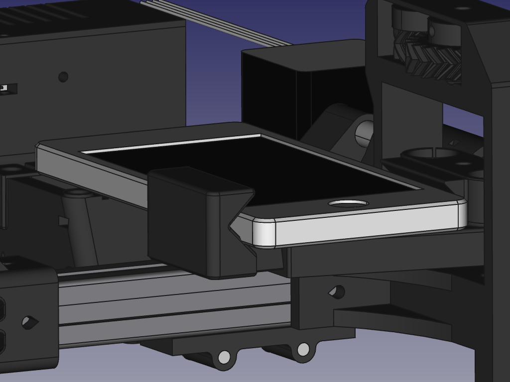

MicroSpot: Del cacharreo al impacto social
Jaime García Villena
Introducción
Montones de proyectos interesantes

Misteriosas herramientas


¿Por qué molestarse?
La necesidad
Enfermedades realmente amenazantes
Diagnóstico muy lento


- Demasiada distancia entre hospital y paciente
- 20 minutos de examen por parte de un profesional
Un nuevo enfoque
Hacer el diagnóstico de manera remota
Construir un aparato que tome imágenes de muestras, in situ
MicroSpot

Características técnicas
Estructura principal
Etapa mecánica
Controlador
Lo que hemos conseguido hasta ahora
Primer prototipo

Nuevas aplicaciones
Orígenes
- Nacido de la colaboración entre el depto. de innovación de bq, y malariaspot.org
- Gracias a las licencias libres, es posible continuar el proyecto
Equipo actual
¡Herramientas libres y accesibles!
Conclusión
Merece la pena cacharrear
- El impacto del cacharreo es real
- Cacharrear te pone en contacto directo con la ciencia detrás de la ingeniería
- Tu proyecto puede terminar supliendo una necesidad importante
Trabajo abierto
Merece trabajar en proyectos abiertos porque:
- Publicados correctamente, cada una de vuestras colaboraciones está firmada por vosotros
- Éste trabajo es comprobable por cualquier persona
- Todo esto constituye una línea de currículum muy sólida
Así que...
¡A CACHARREAR!
¡MUCHAS GRACIAS!
¿Preguntas?